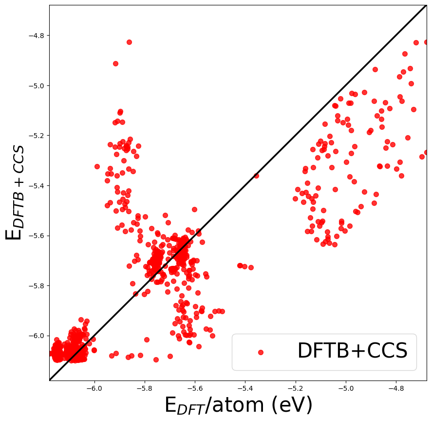

CSS repulsive potential generation (2-body)
Input: DFT_DB.db
Output: CCS parameters and fit of predicted energies vs. those in the DFT database
import os, sys, warnings
import json
import itertools as it
from collections import OrderedDict, defaultdict
import numpy as np
from ase import Atoms
from ase import io
from ase.calculators.neighborlist import NeighborList
import ase.db as db
from tqdm import tqdm
from ccs_fit.scripts.ccs_fetch import ccs_fetch as ccs_fetch
from ccs_fit.fitting.main import twp_fit as ccs_fit
from ccs_fit.common.exceptions import ScriptError
from ccs_fit.ase_calculator.ccs_ase_calculator import CCS
base_dir=os.getcwd()
os.chdir(base_dir)
print('Base dir is:', base_dir)
warnings.filterwarnings('ignore')
/home/runner/.cache/pypoetry/virtualenvs/ccs-fit-oj5MS1KF-py3.9/lib/python3.9/site-packages/ase/calculators/neighborlist.py:5: UserWarning: Moved to ase.neighborlist
warnings.warn('Moved to ase.neighborlist')
Base dir is: /home/runner/work/CCS/CCS/docs
#generate data generates trainingset in the format for CCS (structures.json)
cwd = os.getcwd()
if not os.path.isdir(cwd+"/CCS/"):
os.mkdir(cwd+"/CCS/")
os.chdir(cwd+"/CCS/")
### Cleaning up old files
if os.path.isfile('CCS_DB.db'):
os.remove('CCS_DB.db')
if os.path.isfile('ccs.spl'):
os.remove('ccs.spl')
#generate data generates trainingset in the format for CCS (structures.json)
ccs_fetch(mode='CCS', R_c=6.0, Ns='all', DFT_DB='../DFT_DB.db', DFTB_DB='../DFT_DB.db')
Fetching data: 0%| | 0/999 [00:00<?, ?it/s]
Fetching data: 1%|▏ | 14/999 [00:00<00:07, 135.24it/s]
Fetching data: 3%|▎ | 34/999 [00:00<00:05, 169.46it/s]
Fetching data: 6%|▌ | 55/999 [00:00<00:05, 184.14it/s]
Fetching data: 8%|▊ | 76/999 [00:00<00:04, 193.15it/s]
Fetching data: 10%|▉ | 96/999 [00:00<00:04, 194.37it/s]
Fetching data: 12%|█▏ | 116/999 [00:00<00:04, 194.12it/s]
Fetching data: 14%|█▎ | 136/999 [00:00<00:04, 192.83it/s]
Fetching data: 16%|█▌ | 156/999 [00:00<00:04, 194.11it/s]
Fetching data: 18%|█▊ | 177/999 [00:00<00:04, 198.81it/s]
Fetching data: 20%|█▉ | 198/999 [00:01<00:03, 200.58it/s]
Fetching data: 22%|██▏ | 219/999 [00:01<00:03, 196.88it/s]
Fetching data: 24%|██▍ | 240/999 [00:01<00:03, 199.59it/s]
Fetching data: 26%|██▌ | 262/999 [00:01<00:03, 203.64it/s]
Fetching data: 28%|██▊ | 283/999 [00:01<00:03, 204.07it/s]
Fetching data: 30%|███ | 304/999 [00:01<00:03, 205.70it/s]
Fetching data: 33%|███▎ | 325/999 [00:01<00:03, 206.07it/s]
Fetching data: 35%|███▍ | 346/999 [00:01<00:03, 199.54it/s]
Fetching data: 37%|███▋ | 367/999 [00:01<00:03, 198.82it/s]
Fetching data: 39%|███▊ | 387/999 [00:01<00:03, 198.98it/s]
Fetching data: 41%|████ | 407/999 [00:02<00:02, 199.01it/s]
Fetching data: 43%|████▎ | 428/999 [00:02<00:02, 200.07it/s]
Fetching data: 45%|████▍ | 449/999 [00:02<00:02, 199.77it/s]
Fetching data: 47%|████▋ | 470/999 [00:02<00:02, 200.69it/s]
Fetching data: 49%|████▉ | 491/999 [00:02<00:02, 201.73it/s]
Fetching data: 51%|█████▏ | 512/999 [00:02<00:02, 177.63it/s]
Fetching data: 53%|█████▎ | 531/999 [00:02<00:02, 164.25it/s]
Fetching data: 55%|█████▍ | 548/999 [00:02<00:02, 156.06it/s]
Fetching data: 56%|█████▋ | 564/999 [00:03<00:02, 151.13it/s]
Fetching data: 58%|█████▊ | 580/999 [00:03<00:02, 147.31it/s]
Fetching data: 60%|█████▉ | 595/999 [00:03<00:02, 144.13it/s]
Fetching data: 61%|██████ | 610/999 [00:03<00:02, 142.17it/s]
Fetching data: 63%|██████▎ | 625/999 [00:03<00:02, 140.94it/s]
Fetching data: 64%|██████▍ | 640/999 [00:03<00:02, 140.63it/s]
Fetching data: 66%|██████▌ | 655/999 [00:03<00:02, 140.74it/s]
Fetching data: 67%|██████▋ | 670/999 [00:03<00:02, 140.48it/s]
Fetching data: 69%|██████▊ | 685/999 [00:03<00:02, 141.47it/s]
Fetching data: 71%|███████ | 705/999 [00:03<00:01, 156.54it/s]
Fetching data: 73%|███████▎ | 726/999 [00:04<00:01, 171.82it/s]
Fetching data: 75%|███████▍ | 747/999 [00:04<00:01, 181.98it/s]
Fetching data: 77%|███████▋ | 768/999 [00:04<00:01, 187.87it/s]
Fetching data: 79%|███████▉ | 790/999 [00:04<00:01, 195.11it/s]
Fetching data: 81%|████████ | 811/999 [00:04<00:00, 196.74it/s]
Fetching data: 83%|████████▎ | 832/999 [00:04<00:00, 198.08it/s]
Fetching data: 85%|████████▌ | 853/999 [00:04<00:00, 197.45it/s]
Fetching data: 87%|████████▋ | 873/999 [00:04<00:00, 193.46it/s]
Fetching data: 89%|████████▉ | 893/999 [00:04<00:00, 171.80it/s]
Fetching data: 91%|█████████ | 911/999 [00:05<00:00, 157.23it/s]
Fetching data: 93%|█████████▎| 928/999 [00:05<00:00, 148.12it/s]
Fetching data: 94%|█████████▍| 944/999 [00:05<00:00, 142.08it/s]
Fetching data: 96%|█████████▌| 959/999 [00:05<00:00, 139.03it/s]
Fetching data: 97%|█████████▋| 974/999 [00:05<00:00, 136.79it/s]
Fetching data: 99%|█████████▉| 988/999 [00:05<00:00, 130.83it/s]
Fetching data: 100%|██████████| 999/999 [00:05<00:00, 172.23it/s]
#DEFINE INPUT
input={
"General": {
"interface": "CCS"
},
"Twobody": {
"Xx-Xx": {
"Rcut": 6.0,
"Resolution": 0.05,
"Swtype": "rep"
}
}
}
#SAVE TO FILE
with open('input.json', 'w') as f:
json.dump(input, f, indent=8)
#RUN FIT
ccs_fit("input.json")
Generating one-body information from training-set.
Added elements: ['C', 'H', 'Li', 'O']
Generating two-body potentials from one-body information.
Adding pair: C-C
Adding pair: C-H
Adding pair: C-Li
Adding pair: C-O
Adding pair: H-H
Adding pair: H-Li
Adding pair: H-O
Adding pair: Li-Li
Adding pair: Li-O
Adding pair: O-O
Applying monotonous constraints for pair: C-C
Applying monotonous constraints for pair: C-H
Applying monotonous constraints for pair: C-Li
Applying monotonous constraints for pair: C-O
Applying monotonous constraints for pair: H-H
Applying monotonous constraints for pair: H-Li
Applying monotonous constraints for pair: H-O
Applying monotonous constraints for pair: Li-Li
Applying monotonous constraints for pair: Li-O
Applying monotonous constraints for pair: O-O
Finding optimum switch: 0%| | 0/1 [00:00<?, ?it/s]
Finding optimum switch: 100%|██████████| 1/1 [00:00<00:00, 1.20it/s]
Finding optimum switch: 100%|██████████| 1/1 [00:00<00:00, 1.20it/s]
The best switch is (98, 103, 83, 99, 109, 81, 106, 2, 91, 83) with mse: 4.2439
Final root mean square error in fit: 0.20475544736943482 (eV/atoms) [NOTE: Only elements specified in Onebody are considered!]
Analysis
struct=db.connect("../DFT_DB.db")
db_ccs=db.connect("CCS_DB.db")
with open('CCS_params.json', 'r') as f:
CCS_params = json.load(f)
for row in tqdm(struct.select(), total=len(struct)):
structure=row.toatoms()
structure.calc=CCS(CCS_params=CCS_params)
structure.get_potential_energy()
structure.get_forces()
db_ccs.write(structure,key=row.key,CCS=True)
0%| | 0/999 [00:00<?, ?it/s]
1%| | 5/999 [00:00<00:20, 48.22it/s]
1%| | 12/999 [00:00<00:16, 59.37it/s]
2%|▏ | 20/999 [00:00<00:14, 67.97it/s]
3%|▎ | 27/999 [00:00<00:14, 67.45it/s]
3%|▎ | 34/999 [00:00<00:14, 66.70it/s]
4%|▍ | 41/999 [00:00<00:14, 67.25it/s]
5%|▍ | 49/999 [00:00<00:13, 69.30it/s]
6%|▌ | 56/999 [00:00<00:13, 68.43it/s]
6%|▋ | 63/999 [00:00<00:13, 68.83it/s]
7%|▋ | 70/999 [00:01<00:13, 67.46it/s]
8%|▊ | 77/999 [00:01<00:13, 65.87it/s]
8%|▊ | 84/999 [00:01<00:14, 63.72it/s]
9%|▉ | 92/999 [00:01<00:13, 65.94it/s]
10%|█ | 100/999 [00:01<00:13, 68.58it/s]
11%|█ | 107/999 [00:01<00:13, 67.85it/s]
12%|█▏ | 115/999 [00:01<00:12, 69.34it/s]
12%|█▏ | 122/999 [00:01<00:13, 66.95it/s]
13%|█▎ | 129/999 [00:01<00:12, 67.69it/s]
14%|█▎ | 137/999 [00:02<00:12, 68.81it/s]
14%|█▍ | 144/999 [00:02<00:12, 68.45it/s]
15%|█▌ | 151/999 [00:02<00:12, 68.74it/s]
16%|█▌ | 159/999 [00:02<00:11, 71.08it/s]
17%|█▋ | 167/999 [00:02<00:11, 72.48it/s]
18%|█▊ | 175/999 [00:02<00:11, 73.71it/s]
18%|█▊ | 183/999 [00:02<00:10, 74.68it/s]
19%|█▉ | 191/999 [00:02<00:10, 74.76it/s]
20%|█▉ | 199/999 [00:02<00:10, 75.85it/s]
21%|██ | 207/999 [00:02<00:10, 76.08it/s]
22%|██▏ | 215/999 [00:03<00:10, 74.94it/s]
22%|██▏ | 223/999 [00:03<00:10, 75.33it/s]
23%|██▎ | 231/999 [00:03<00:10, 76.22it/s]
24%|██▍ | 239/999 [00:03<00:09, 76.29it/s]
25%|██▍ | 247/999 [00:03<00:09, 76.50it/s]
26%|██▌ | 255/999 [00:03<00:09, 76.30it/s]
26%|██▋ | 263/999 [00:03<00:09, 76.34it/s]
27%|██▋ | 271/999 [00:03<00:09, 76.42it/s]
28%|██▊ | 279/999 [00:03<00:09, 76.66it/s]
29%|██▊ | 287/999 [00:04<00:09, 75.87it/s]
30%|██▉ | 295/999 [00:04<00:09, 75.32it/s]
30%|███ | 303/999 [00:04<00:09, 75.24it/s]
31%|███ | 311/999 [00:04<00:09, 75.68it/s]
32%|███▏ | 319/999 [00:04<00:08, 75.97it/s]
33%|███▎ | 327/999 [00:04<00:08, 75.94it/s]
34%|███▎ | 335/999 [00:04<00:08, 75.81it/s]
34%|███▍ | 343/999 [00:04<00:08, 75.91it/s]
35%|███▌ | 351/999 [00:04<00:08, 76.01it/s]
36%|███▌ | 359/999 [00:04<00:08, 76.28it/s]
37%|███▋ | 367/999 [00:05<00:08, 76.09it/s]
38%|███▊ | 375/999 [00:05<00:08, 75.53it/s]
38%|███▊ | 383/999 [00:05<00:08, 75.31it/s]
39%|███▉ | 391/999 [00:05<00:08, 75.33it/s]
40%|███▉ | 399/999 [00:05<00:07, 75.52it/s]
41%|████ | 407/999 [00:05<00:07, 75.83it/s]
42%|████▏ | 415/999 [00:05<00:07, 75.97it/s]
42%|████▏ | 423/999 [00:05<00:07, 75.20it/s]
43%|████▎ | 431/999 [00:05<00:08, 70.48it/s]
44%|████▍ | 439/999 [00:06<00:08, 69.24it/s]
45%|████▍ | 446/999 [00:06<00:08, 68.05it/s]
45%|████▌ | 453/999 [00:06<00:09, 55.61it/s]
46%|████▌ | 459/999 [00:06<00:10, 50.15it/s]
47%|████▋ | 465/999 [00:06<00:10, 51.62it/s]
47%|████▋ | 472/999 [00:06<00:09, 55.17it/s]
48%|████▊ | 479/999 [00:06<00:09, 57.00it/s]
49%|████▊ | 486/999 [00:06<00:08, 59.41it/s]
49%|████▉ | 493/999 [00:07<00:08, 57.59it/s]
50%|████▉ | 499/999 [00:07<00:09, 54.11it/s]
51%|█████ | 505/999 [00:07<00:09, 50.20it/s]
51%|█████ | 511/999 [00:07<00:09, 50.54it/s]
52%|█████▏ | 517/999 [00:07<00:09, 49.27it/s]
52%|█████▏ | 522/999 [00:07<00:09, 48.42it/s]
53%|█████▎ | 527/999 [00:07<00:09, 48.20it/s]
53%|█████▎ | 532/999 [00:07<00:09, 47.33it/s]
54%|█████▍ | 538/999 [00:08<00:09, 48.44it/s]
54%|█████▍ | 544/999 [00:08<00:09, 49.18it/s]
55%|█████▌ | 550/999 [00:08<00:08, 50.64it/s]
56%|█████▌ | 556/999 [00:08<00:08, 52.21it/s]
56%|█████▋ | 562/999 [00:08<00:08, 52.92it/s]
57%|█████▋ | 568/999 [00:08<00:08, 53.53it/s]
57%|█████▋ | 574/999 [00:08<00:07, 54.24it/s]
58%|█████▊ | 580/999 [00:08<00:07, 54.16it/s]
59%|█████▊ | 586/999 [00:08<00:07, 52.75it/s]
59%|█████▉ | 592/999 [00:09<00:07, 52.74it/s]
60%|█████▉ | 598/999 [00:09<00:07, 51.13it/s]
60%|██████ | 604/999 [00:09<00:07, 52.04it/s]
61%|██████ | 610/999 [00:09<00:07, 52.13it/s]
62%|██████▏ | 616/999 [00:09<00:07, 51.98it/s]
62%|██████▏ | 622/999 [00:09<00:07, 52.72it/s]
63%|██████▎ | 628/999 [00:09<00:07, 52.80it/s]
63%|██████▎ | 634/999 [00:09<00:06, 52.33it/s]
64%|██████▍ | 640/999 [00:09<00:07, 50.87it/s]
65%|██████▍ | 646/999 [00:10<00:06, 50.80it/s]
65%|██████▌ | 652/999 [00:10<00:06, 50.71it/s]
66%|██████▌ | 658/999 [00:10<00:06, 51.87it/s]
66%|██████▋ | 664/999 [00:10<00:06, 51.33it/s]
67%|██████▋ | 670/999 [00:10<00:06, 51.11it/s]
68%|██████▊ | 676/999 [00:10<00:06, 50.43it/s]
68%|██████▊ | 682/999 [00:10<00:06, 52.39it/s]
69%|██████▉ | 688/999 [00:10<00:05, 54.46it/s]
70%|██████▉ | 695/999 [00:11<00:05, 56.59it/s]
70%|███████ | 703/999 [00:11<00:04, 60.45it/s]
71%|███████ | 710/999 [00:11<00:04, 62.30it/s]
72%|███████▏ | 717/999 [00:11<00:04, 63.78it/s]
72%|███████▏ | 724/999 [00:11<00:04, 65.12it/s]
73%|███████▎ | 731/999 [00:11<00:04, 66.29it/s]
74%|███████▍ | 738/999 [00:11<00:03, 66.93it/s]
75%|███████▍ | 746/999 [00:11<00:03, 68.61it/s]
75%|███████▌ | 753/999 [00:11<00:03, 67.58it/s]
76%|███████▌ | 760/999 [00:11<00:03, 67.12it/s]
77%|███████▋ | 767/999 [00:12<00:03, 67.79it/s]
77%|███████▋ | 774/999 [00:12<00:03, 68.42it/s]
78%|███████▊ | 781/999 [00:12<00:03, 67.77it/s]
79%|███████▉ | 789/999 [00:12<00:03, 69.19it/s]
80%|███████▉ | 797/999 [00:12<00:02, 69.49it/s]
81%|████████ | 805/999 [00:12<00:02, 69.61it/s]
81%|████████▏ | 813/999 [00:12<00:02, 72.03it/s]
82%|████████▏ | 821/999 [00:12<00:02, 73.66it/s]
83%|████████▎ | 829/999 [00:12<00:02, 73.17it/s]
84%|████████▍ | 837/999 [00:13<00:02, 73.66it/s]
85%|████████▍ | 845/999 [00:13<00:02, 74.82it/s]
85%|████████▌ | 853/999 [00:13<00:01, 74.08it/s]
86%|████████▌ | 861/999 [00:13<00:01, 75.54it/s]
87%|████████▋ | 869/999 [00:13<00:01, 74.62it/s]
88%|████████▊ | 877/999 [00:13<00:01, 71.00it/s]
89%|████████▊ | 885/999 [00:13<00:01, 65.62it/s]
89%|████████▉ | 892/999 [00:13<00:01, 62.50it/s]
90%|████████▉ | 899/999 [00:13<00:01, 57.80it/s]
91%|█████████ | 905/999 [00:14<00:01, 54.79it/s]
91%|█████████ | 911/999 [00:14<00:01, 52.69it/s]
92%|█████████▏| 917/999 [00:14<00:01, 52.38it/s]
92%|█████████▏| 923/999 [00:14<00:01, 51.82it/s]
93%|█████████▎| 929/999 [00:14<00:01, 50.95it/s]
94%|█████████▎| 935/999 [00:14<00:01, 49.55it/s]
94%|█████████▍| 940/999 [00:14<00:01, 49.65it/s]
95%|█████████▍| 945/999 [00:14<00:01, 47.61it/s]
95%|█████████▌| 950/999 [00:15<00:01, 47.38it/s]
96%|█████████▌| 956/999 [00:15<00:00, 48.77it/s]
96%|█████████▌| 961/999 [00:15<00:00, 48.92it/s]
97%|█████████▋| 967/999 [00:15<00:00, 49.92it/s]
97%|█████████▋| 972/999 [00:15<00:00, 49.83it/s]
98%|█████████▊| 978/999 [00:15<00:00, 50.13it/s]
98%|█████████▊| 984/999 [00:15<00:00, 50.54it/s]
99%|█████████▉| 990/999 [00:15<00:00, 51.11it/s]
100%|█████████▉| 996/999 [00:15<00:00, 50.31it/s]
100%|██████████| 999/999 [00:16<00:00, 62.31it/s]
#Read Data
dbname_DFT='../DFT_DB.db'
dbname_CCS='CCS_DB.db'
db_ccs=db.connect(dbname_CCS)
db_dft=db.connect(dbname_DFT)
epred=[];edft=[]; eccs=[];
for row in tqdm(db_dft.select(), total=len(db_dft)):
structure=row.toatoms()
natoms=len(structure.get_atomic_numbers())
id=str(row.key)
eccs.append(db_ccs.get('key='+id).energy/natoms)
edft.append(db_dft.get('key='+id).energy/natoms)
0%| | 0/999 [00:00<?, ?it/s]
3%|▎ | 29/999 [00:00<00:03, 284.62it/s]
6%|▌ | 60/999 [00:00<00:03, 295.48it/s]
9%|▉ | 91/999 [00:00<00:03, 301.74it/s]
12%|█▏ | 124/999 [00:00<00:02, 310.12it/s]
16%|█▌ | 156/999 [00:00<00:02, 310.33it/s]
19%|█▉ | 188/999 [00:00<00:02, 312.20it/s]
22%|██▏ | 220/999 [00:00<00:02, 311.07it/s]
25%|██▌ | 252/999 [00:00<00:02, 307.82it/s]
28%|██▊ | 284/999 [00:00<00:02, 311.42it/s]
32%|███▏ | 316/999 [00:01<00:02, 307.02it/s]
35%|███▍ | 349/999 [00:01<00:02, 312.18it/s]
38%|███▊ | 381/999 [00:01<00:01, 313.67it/s]
41%|████▏ | 413/999 [00:01<00:01, 313.32it/s]
45%|████▍ | 445/999 [00:01<00:01, 309.27it/s]
48%|████▊ | 477/999 [00:01<00:01, 311.26it/s]
51%|█████ | 510/999 [00:01<00:01, 315.58it/s]
54%|█████▍ | 543/999 [00:01<00:01, 317.43it/s]
58%|█████▊ | 575/999 [00:01<00:01, 317.69it/s]
61%|██████ | 607/999 [00:01<00:01, 316.58it/s]
64%|██████▍ | 640/999 [00:02<00:01, 317.65it/s]
67%|██████▋ | 673/999 [00:02<00:01, 318.46it/s]
71%|███████ | 705/999 [00:02<00:00, 318.67it/s]
74%|███████▍ | 738/999 [00:02<00:00, 320.89it/s]
77%|███████▋ | 771/999 [00:02<00:00, 319.83it/s]
80%|████████ | 803/999 [00:02<00:00, 316.36it/s]
84%|████████▎ | 835/999 [00:02<00:00, 315.22it/s]
87%|████████▋ | 867/999 [00:02<00:00, 315.72it/s]
90%|████████▉ | 899/999 [00:02<00:00, 314.21it/s]
93%|█████████▎| 931/999 [00:02<00:00, 304.80it/s]
96%|█████████▋| 962/999 [00:03<00:00, 303.83it/s]
99%|█████████▉| 993/999 [00:03<00:00, 299.18it/s]
100%|██████████| 999/999 [00:03<00:00, 310.88it/s]
#plot Energies
import matplotlib.pyplot as plt
plt.figure(figsize = (10,10))
plt.scatter(edft, eccs, s=50, alpha=0.8, color='r')
plt.plot([np.min(edft),np.max(edft)], [np.min(edft),np.max(edft)], 'k-', lw=2.5)
plt.legend(labels=["DFTB+CCS"], fontsize=30 )
plt.xlabel('E$_{DFT}$/atom (eV)',fontsize=30)
plt.ylabel('E$_{DFTB+CCS}$',fontsize=30)
plt.xlim(np.min(edft),np.max(edft))
plt.ylim(np.min(edft),np.max(edft))
plt.savefig('DFTvsDFTB+CCS.png')
plt.show()
